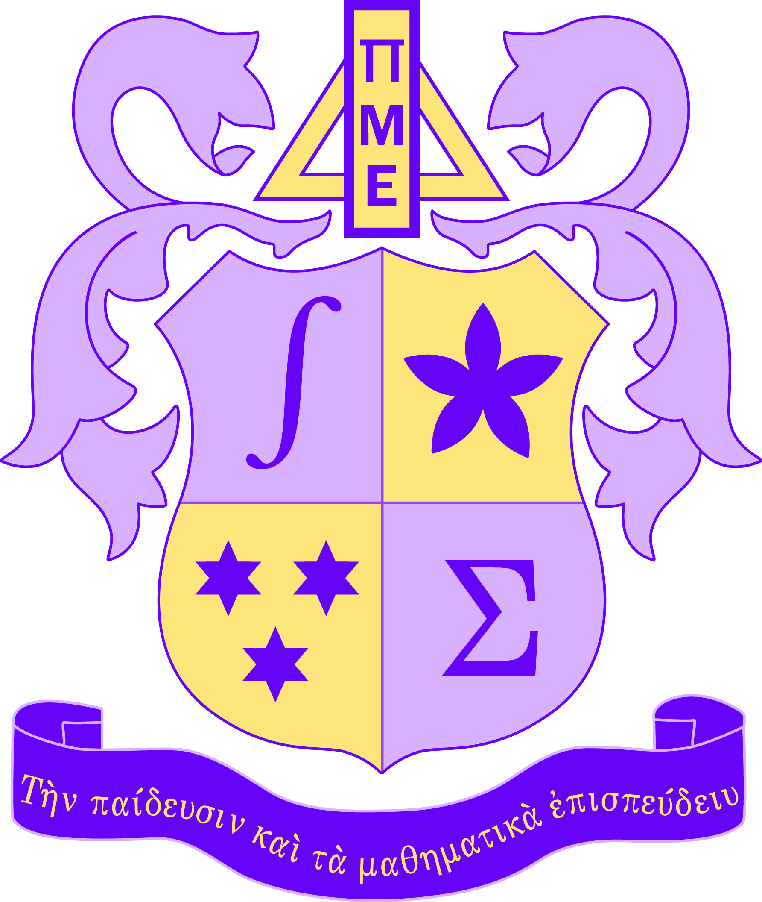

Induction Ceremony
Virginia Omicron Chapter · Liberty University
Tuesday, April 7, 2026
5:30 PM · DeMoss Hall Room 4272
“To Promote Scholarship and Mathematics”

About Pi Mu Epsilon
Pi Mu Epsilon is the national mathematics honor society. Founded at Syracuse University and incorporated in 1914, it promotes mathematics and recognizes scholarly achievement among students and faculty.
This Ceremony
The first induction ceremony of the Virginia Omicron Chapter celebrates the formal beginning of a new community of mathematical scholarship at Liberty University.
Program Order
| 5:30 | Welcome and Opening Prayer — Prof. Andrew H. Volk |
| 5:35 | Pi Mu Epsilon: Purpose and History — Emma Kay |
| 5:41 | Virginia Omicron at Liberty University — Avery Morrison |
| 5:46 | Brief Discussion: PME and Mathematical Rigor — Dr. Thomas Wakefield, Chair and Professor of Mathematics, Youngstown State University; Past President, Pi Mu Epsilon |
| 5:56 | Scholarship Pledge — Led by Heidi Jackson |
| 6:00 | Induction of New Members — Names read by Isaiah Nathaniel Mellace and Annaliese DeFelice |
| 6:10 | Membership Book Signing and Mathematical Prompts — Led by Dr. Daniel Scott Joseph and Prof. Andrew H. Volk |
| 6:22 | Symbols and Motto of Pi Mu Epsilon — Prof. Andrew H. Volk |
| 6:25 | Charge to New Members — Prof. Andrew H. Volk |
| 6:28 | Group Photo on the DeMoss Steps — Led by Avery Morrison |
| 6:30 | Closing Remarks and Closing Prayer — Prof. Andrew H. Volk |
Pi Mu Epsilon Pledge
“I solemnly promise that I will exert my best efforts to promote true scholarship, particularly in mathematics; and that I will support the objectives of the Pi Mu Epsilon Honor Society.”
New Members — Virginia Omicron
Faculty
- Dr. Daniel Scott Joseph
- Dr. Timothy E. Sprano
- Prof. Andrew H. Volk
- Mr. Robert Young
Students
- Claire Madison Botts
- Sage Rayne Bushman
- Rebecca Clapp
- Violet Cramer
- Annaliese Isabel Quigley DeFelice
- Annabeth Hughes
- Jared Michael Hughes
- Heidi Jackson
- Emma Kay
- Samantha Keiser
- Michael Kendrick
- Gabriella Kayleen Lawson
- Isaiah Nathaniel Mellace
- Avery Morrison
- Luka Nigro
- Anastasia Leigh O'Donnell
- Julia Parlett
- Conner Pratt
- Ethan Wallace
- Lauren Grace Zissos
QR Code